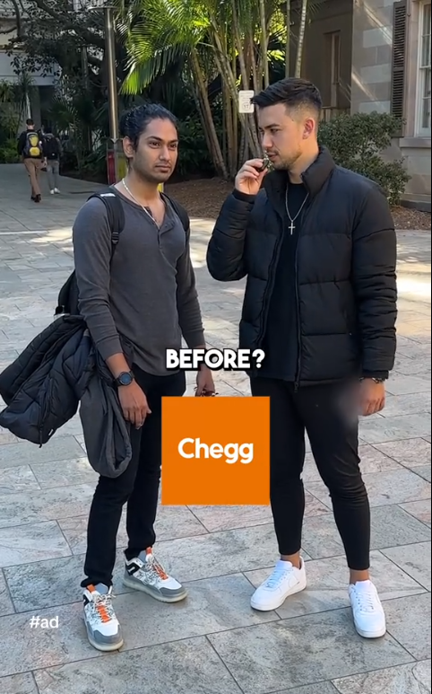

How fraud is undermining scientific research
7 July 2025
Queensland University of Technology
Photo by American Jael on Unsplash
Papers for sale
From author-for
-sale.bsky.social
Q: Why? A #1: Pressure
• “To be promoted, he needed to publish at least ten more papers, in journals in the top half of those ranked by the Web of Science, a citation index. And to meet this demanding requirement, he’d turned to paper mills.”
From Authorship for sale: Nature investigates how paper mills work
Q: Why? A #1: Pressure
• “To be promoted, he needed to publish at least ten more papers, in journals in the top half of those ranked by the Web of Science, a citation index. And to meet this demanding requirement, he’d turned to paper mills.”
• “[The] struggle to balance research, clinical duties and personal life is one of the key factors driving some of them towards the services provided by paper mills.”
From Authorship for sale: Nature investigates how paper mills work
Q: Why? A #1: Pressure
• “To be promoted, he needed to publish at least ten more papers, in journals in the top half of those ranked by the Web of Science, a citation index. And to meet this demanding requirement, he’d turned to paper mills.”
• “[The] struggle to balance research, clinical duties and personal life is one of the key factors driving some of them towards the services provided by paper mills.”
From Authorship for sale: Nature investigates how paper mills work

Q: Why? A #2: Competition

Natural History Museum, London, CC BY 4.0 https://creativecommons.org/licenses/by/4.0, via Wikimedia Commons

Conty, CC BY 3.0 https://creativecommons.org/licenses/by/3.0, via Wikimedia Commons
Q: Why? A #3: Money
Two kinds of cheater
Out-and-out cheats = fake the entire fossil
Bespoke cheats = add a few neck bones

2.5 kinds of cheater
Out-and-out cheats = fake the entire fossil
Bespoke cheats = add a few neck bones
Fossil mining = genuine fossils carelessly ripped from the ground
Removing neck bones
Doctored images
QIMR
Harms
- European guidelines recommending beta-blockers for patients undergoing non-cardiac surgery were based on six randomised trials that had suffered from ‘data fabrication’ and ‘academic misconduct’
Harms
European guidelines recommending beta-blockers for patients undergoing non-cardiac surgery were based on six randomised trials that had suffered from ‘data fabrication’ and ‘academic misconduct’
Excluding the DECREASE trials from a meta-analysis meant that the summary estimate switched from β blockers being protective to harmful
Harms
European guidelines recommending beta-blockers for patients undergoing non-cardiac surgery were based on six randomised trials that had suffered from ‘data fabrication’ and ‘academic misconduct’
Excluding the DECREASE trials from a meta-analysis meant that the summary estimate switched from β blockers being protective to harmful
An estimated 800,000 excess deaths across Europe over five years because of the misinformed guidelines
Nonsense images
Nonsense phrases
| In paper | Should be |
|---|---|
| colossal information | big data |
| counterfeit consciousness | artificial intelligence |
| unmarried-shot | single- shot |
| intensity and vulnerability | strengths and weaknesses |
Problems:
- Bar charts
- AI explosion?
- Researchers willing to compromise (DCE)
Statically significant
Explosion in NHANES papers
• Association between a body shape index and cognitive impairment among US older adults aged 40 years and above from a cross-sectional survey of the NHANES 2011-2014
• Association between a body shape index and cognitive impairment among us older adults from a cross-sectional survey of the NHANES 2011–2014
• Association Between Systemic Immune Inflammation Index and Diabetes Mellitus in the NHANES 2003-2018 Population
• Association between systemic immune-inflammation index and diabetes: a population-based study from the NHANES
• Association between muscle strength and mass and bone mineral density in the US general population: data from NHANES 1999–2002
• Correlation of muscle mass and bone mineral density in the NHANES US general population, 2017-2018
Gold standard
Solutions?

Quality vs quantity
Remove paper names
De-index bad journals
 ::::aside From giphy ::::
::::aside From giphy ::::
Peer review pre-prints
Funding
Retraction Watch
Pubpeer
Automated screening
Reward whistleblowers

Forget impact factors
Forget impact factors
813 hospitalised, 613 (75%) excluded because they were still hospitalised or not confirmed as infected
Has been cited 35,000+ times
Forget impact factors
Be less academic
``Be stirring as the time; be fire with fire
Threaten the threatener and outface the brow’’
King John, William Shakespeare
More solutions
- De-index bad journals now
- More open science
- How to spot papers: https://www.nature.com/articles/d41586-025-01826-1